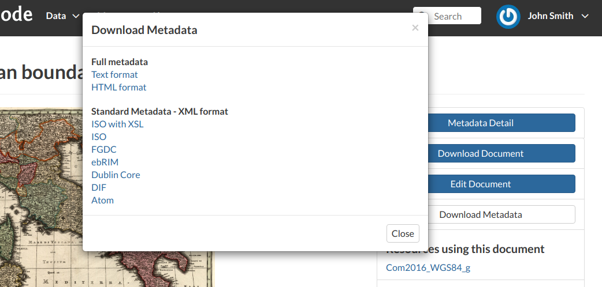

Document Information¶
From the Documents Search Page (see Documents) you can select the document you are interested in and see some basic information about it. You can access the document details page by clicking on its name. That page looks like the one shown in the picture below.

Document Information page
On the page of a document, the resource is either directly displayed on the page or accessible by clicking on the link provided under the title.
Exploring the Tabs Sections¶
There is a Tab Section below the document, where you can first view Info about the document.
The Info Tab section shows the document metadata such as its title, abstract, date of publication etc. The metadata also indicates the user who is responsible for uploading and managing this content, as well as the group to which it is linked.
The Share Tab provides the social media links for the document to share. There is also a link to share the document through email.
Document Sharing
You can Rate the document through the Ratings system.

Rate the Document
In the Comments Tab section you can post your comment. Click on Add Comment, insert your comment and click Submit Comment to post it.
Document Comments
Your comment will be added next to the last already existing comment. If you want to remove it click on the red Delete button.

Your Comment
If you want this document in your Favorites (see User Profile), open the Favorite Tab and click on Add to Favorites.

Your Favorite Comment
GeoNode also supports the EXIF (EXchangeable Image Format) for jpeg and tiff image documents.
The EXIF means that additional information (metadata) are stored within the image, so GeoNode allows you to see those information in the Exif Tab.

The EXIF tab
The Tools Section¶
On the right side of the Document Page you can see other useful information such as the links to the resources linked to the document, the document Owner, the Point of Contact and the Metadata Author.

Document useful tool
In the same section of the Document Page you can find the following useful tool:
Metadata Detail to explore in detail the document metadata (see the next paragraph)
Download Document to download the document
Edit Document to change the document metadata, replace the file etc (see Document Editing)
Download Metadata to download the whole set of metadata in various formats
Document Metadata download
Change Document Permissions to assign permissions on the document to users and groups (see Changing the Document Permissions).
Exploring Metadata Details¶
When clicking on the Metadata Detail button the Metadata Details Page will open.
Document Metadata Details page
- Identification to uniquely identify the document
- Owner, the user who own the document
- Information, the identification image, the Spatial Extent, Projection System and so on
- Features, Restrictions, Language and so on
- Contact Points, the user available to have a contact
- References, various links to the resource information
- Metadata Author, the metadata author information